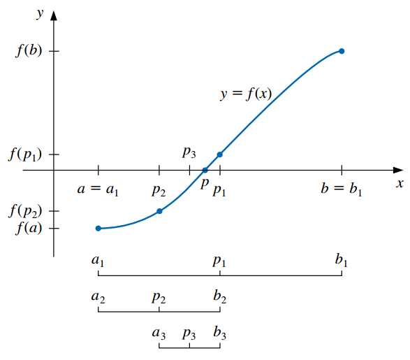
2 Resolución de ecuaciones en una variable
2.1 Introducción
En esta unidad consideraremos uno de los problemas más básicos de la aproximación numérica: el problema de la búsqueda de la raíz, es decir, encontrar una raíz o solución para una ecuación de la forma \(f(x) = 0\), para una función \(f\) dada.
Una raíz de esta ecuación también recibe el nombre de cero de la función \(f\).
Generalmente se clasifica a las ecuaciones como lineales o no lineales
Una ecuación lineal es una igualdad que involucra una o más variables elevadas a la primera potencia y no contiene productos entre las variables (involucra solamente sumas y restas de las variables). Por ejemplo: \(3x+2 = 8\).
Para este tipo de ecuaciones es posible hallar analíticamente una expresión para su solución, aunque esto puede resultar en un proceso complejo.
En una ecuación no lineal las incógnitas están elevadas a potencias distintas de \(1\), aparecen en denominadores o exponentes o están afectadas por funciones no lineales (como el logaritmo o las trigonométricas).
A las ecuaciones no lineales se las suele clasificar como:
Ecuaciones algebraicas: involucran un polinomio igualado a cero:
\[ P_n(x) = a_0 x^n + a_1 x^{n-1} + ... + a_{n-1} x + a_n = 0 \]
donde \(a_0 \ne 0, n \in \mathbb{N}\) y \(a_0, \dots, a_n\) son constantes.
Por ejemplo: \(x^3 - x^2 + 5x - 8 = 2x^5\).
Sabemos que si, por ejemplo, \(n = 2\), la solución de \(ax^2 + b x + c = 0\) está dada por la resolvente:
\[ x_{1,2} = \frac{b \pm \sqrt{b^2 - 4ac}}{2a} \]
Sin embargo, la solución análitica para este tipo de ecuaciones existe sólo para \(n \le 4\).
Ecuaciones trascendentes: incluyen a los otros tipos de ecuaciones no lineales, como por ejemplo:
\[\begin{gather*} x^3 - ln (x) + \frac{3}{x} = 2 \\ tg(x + 45) = 1 + sen(2x) \\ xe^{x}=1 \\ {\displaystyle 5^{x}=9^{x+1} 3^{x}} \end{gather*}\]
En general, tampoco es posible hallar de manera analítica una solución exacta para estas ecuaciones.
Estudiaremos distintos métodos para encontrar las soluciones aproximadas a ecuaciones de una variable, ya sean estas lineales o no lineales.
Todos los métodos que desarrollaremos tienen en común el empleo de una técnica fundamental para el análisis numérico: la iteración.
Los métodos iterativos repiten un proceso hasta obtener un resultado para el problema.
Aplicados a la búsqueda de raíces, en general estos métodos requieren de dos pasos generales:
- Determinar un valor aproximado de la raíz que se busca.
- Mejorar la solución hasta lograr un grado de precisión preestablecido.
2.2 El método de la bisección o búsqueda binaria
Se basa en el teorema de Bolzano1, que dice que si \(f\) es una función continua definida dentro del intervalo \([a, b]\) con \(f(a)\) y \(f(b)\) de signos opuestos, entonces existe un número \(p\) en \((a, b)\) con \(f(p) = 0\) (es decir, \(p\) es la solución de la ecuación \(f(x) = 0\)).
El método realiza repetidamente una reducción a la mitad (o bisección) de subintervalos de \([a, b]\), localizando en cada paso la mitad que contiene a \(p\):
Para comenzar, sea \(a_1 = a\), \(b_1 = b\) y \(p_1 = \frac{a_1 + b_1}{2}\) el punto medio de \([a, b]\).
Si \(f(p_1) = 0\), entonces \(p= p_1\) y terminamos (ya encontramos la raíz).
Si \(f(p_1) \neq 0\):
- Si \(f(a_1)\) y \(f(p_1)\) tienen el mismo signo, \(p \in (p_1, b_1)\). Se define el nuevo subintervalo como \(a_2 = p_1\) y \(b_2 = b_1\).
- Si \(f(a_1)\) y \(f(p_1)\) tienen signos opuestos, \(p \in (a_1, p_1)\). Se define el nuevo subintervalo como \(a_2 = a_1\) y \(b_2 = p_1\).
Se vuelve a aplicar el proceso al intervalo \([a_2, b_2]\) y así sucesivamente hasta verificar algún criterio de parada.
Por ejemplo, podemos seleccionar una tolerancia \(\epsilon > 0\) y detener el proceso siguiendo alguna de estas opciones:
- Cuando la semiamplitud del intervalo sea muy pequeña:
\[ \frac{b-a}{2} < \epsilon \]
- Cuando el valor de la función evaluado en \(f(p_n)\) sea muy pequeño (esto implica que \(p_n\) está próximo a la raíz):
\[ |f(p_n)| < \epsilon \]
- Cuando la diferencia absoluta o relativa entre dos aproximaciones sucesivas sea muy pequeña:
\[ |p_n - p_{n-1}| < \epsilon \]
\[ \frac{|p_n - p_{n-1}|}{|p_n|} < \epsilon, \quad p_N \neq 0 \]
Estas última serán empleadas en muchos métodos iterativos que estudiaremos, optando generalmente por la que se basa en la diferencia relativa.
En los métodos iterativos es importante establecer un límite superior sobre el número de iteraciones, para eliminar la posibilidad de entrar en un ciclo infinito (puede ocurrir si la sucesión diverge o si el programa está codificado incorrectamente). El método de la bisección no diverge pero aún así es recomendable establecer esta cota superior para la cantidad de iteraciones.
Desventajas:
- Convergencia lenta (\(n\) puede volverse bastante grande antes de que \(|p-p_n|\) sea suficientemente pequeño).
- Se podría descartar inadvertidamente una buena aproximación intermedia.
Ventajas:
- Conceptualmente claro.
- Siempre converge a una solución.
Por las características anteriores, con frecuencia se utiliza este método como punto de partida para otros métodos más eficientes.
2.3 El método del punto fijo o de las aproximaciones sucesivas
2.3.1 Punto fijo
- Un punto fijo para una función es un número en el que el valor de la función no cambia cuando se aplica la función.
Definición: el número \(p\) es un punto fijo para una función dada \(g\) si \(g(p) = p\).
Ejemplos:
- \(g(x)=x^{2}-3x+4\): \(2\) es un punto fijo de \(g\) porque \(g(2) = 2\).
- \(g(x)=x^{2}\): \(0\) y \(1\) son puntos fijos de \(g\) porque \(g(0) = 0\) y \(g(1) = 1\).
El problema de encontrar la raíz \(p\) de una ecuación \(f(x) = 0\) puede ser planteado de forma equivalente como la búsqueda del punto fijo de alguna función \(g(x)\).
Antes de ver cómo es eso, tenemos que saber cuándo una función tiene un punto fijo y cómo aproximarlo.
2.3.1.1 Interpretación gráfica
Dado que un punto fijo es el valor de \(x\) que satisface \(x = g(x)\), un punto fijo para \(g\) ocurre precisamente cuando la gráfica de \(y = g(x)\) interseca la gráfica de \(y=x\) (recta identidad).
Por ejemplo, vamos a encontrar los puntos fijos de la función \(g(x) = x^2 - 2\). Si graficamos esta curva junto con la recta identidad, encontraremos los puntos fijos de \(g\) allí donde ambas se cruzan:
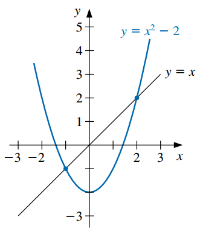
- En la figura podemos observar que los puntos fijos son \(-1\) y \(2\). De hecho: \(g(-1) = 1 - 2 = -1\) y \(g(2) = 4 - 2 = 2\).
2.3.1.2 Cómo encontrar un punto fijo
Para aproximar el punto fijo de una función \(g\), elegimos una aproximación inicial \(p_0\) y generamos la sucesión \(\{p_n\}_{n=0}^\infty\) al permitir \(p_n = g(p_{n-1})\) para cada \(n \geq 1\):
\[\begin{gather*} p_0 \\ p_1 = g(p_0) \\ p_2 = g(p_1) \\ \vdots \\ p_n = g(p_{n-1}) \\ \vdots \\ \end{gather*}\]
Si \(g\) es continua y la sucesión converge a un número \(p\), entonces éste es el punto fijo de \(g\). Demostración:
- La sucesión converge a \(p \implies p = \lim_{n \rightarrow \infty} p_n\).
- Por otro lado, \(\lim_{n \rightarrow \infty} p_n= \lim_{n \rightarrow \infty} g(p_{n-1}) = g\big( \lim_{n \rightarrow \infty} p_{n-1} \big) = g(p)\).
- De los dos ítems anteriores, resulta que \(p = g(p)\), con lo cual \(p\) es un punto fijo de \(g\).
Esta técnica se conoce como iteración de punto fijo o iteración funcional.
Ejemplos:
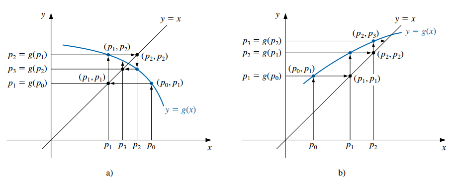
2.3.1.3 Teorema de punto fijo
No todas las funciones tienen un punto fijo y aunque lo tengan no siempre la sucesión anterior nos conduce al mismo.
El siguiente teorema proporciona condiciones suficientes para garantizar la existencia y unicidad de un punto fijo y para que la sucesión converja al mismo.
Teorema de punto fijo:
Si \(g\) es continua en \([a, b]\) y \(g(x) \in [a, b]\) para todo \(x \in [a, b]\), entonces \(g\) tiene por lo menos un punto fjo en \([a, b]\).
Si, además, \(g'(x)\) existe en \((a, b)\) y existe una constante \(0<k<1\) con
\[ |g'(x)| \leq k \quad \forall x \in (a,b), \]
entonces existe exactamente un punto fijo \(p\) en \([a, b]\) y para cualquier número \(p_0\) en \([a, b]\), la sucesión definida por:
\[ p_n = g(p_{n-1}), \qquad n \geq 1 \]
converge al único punto \(p\) en \([a, b]\).
- La siguiente imagen ejemplifica la primera condición establecida por el teorema:
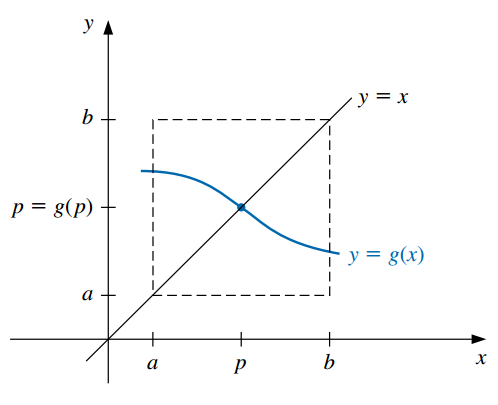
- Estas condiciones son suficientes pero no necesarias (la función puede tener un único punto fijo aunque no se cumplan).
2.3.2 Uso de la iteración de punto fijo para resolver ecuaciones
Sea la ecuación a resolver:
\[f(x) = 0\]
Siempre es posible reexpresarla en la forma:
\[ x = g(x) \]
con alguna función \(g\).
Esto se logra despejando alguna \(x\) o, por ejemplo, sumando \(x\) a cada miembro de la ecuación:
\[ \begin{aligned} 0 &= f(x) \\ x + 0 &= x + f(x) \\ x &= \underbrace{x + f(x)}_{g(x)} \end{aligned} \]
Llamemos con \(p\) a la solución de la ecuación, es decir, al valor que satisface \(f(x) = 0\).
Si \(p\) satisface \(f(x) = 0\), entonces también satisface \(x = g(x)\) (puesto que es la misma ecuación escrita de otra forma).
Entonces, la raíz buscada es el punto fijo de \(g\).
Así, el método de iteración de punto fijo o de aproximaciones sucesivas para resolver \(f(x) = 0\) consiste en:
- Expresar la ecuación en la forma \(x = g(x)\).
- Elegir un valor inicial adecuado \(p_0\).
- Realizar el siguiente cálculo iterativo:
\[\begin{gather*} p_0 \\ p_1 = g(p_0) \\ p_2 = g(p_1) \\ \vdots \\ p_n = g(p_{n-1}) \\ \vdots \\ \end{gather*}\]
Si a medida que \(n\) crece los \(p_n\) se aproximan a un valor fijo, se dice que el método converge y la iteración se detiene cuando la diferencia entre dos valores consecutivos \(p_{n-1}\) y \(p_n\) sea tan pequeña como se desee, a juzgar por los criterios de parada mencionados anteriormente.
El valor \(p_n\) será una raíz aproximada de \(f(x)\).
2.3.3 Ejemplo
Hallar las raíces de la ecuación no lineal: \(f(x) = x^2-3x+e^x-2=0\)
Graficamos y vemos que las raíces están cercanas a -0.4 y 1.4 (podés hacer estos gráficos rápidamente con Geogebra.

Paso 1: postular \(g(x)\)
Reescribimos \(f(x) = 0\) como \(x = g(x)\)
Por ejemplo, despejando la \(x\) del segundo término:
\[f(x) = x^2-3x+e^x-2 = 0\] \[\implies x = \underbrace{\frac{x^2+e^x-2}{3}}_{g(x)}\] \[\implies g(x)= \frac{x^2+e^x-2}{3}\]
Paso 2: verificar si \(g(x)\) cumple las condiciones del teorema
Vamos a concentrarnos en la raíz negativa, para ver si las condiciones del teorema se verifican en una vecindad de la misma.
Necesitamos calcular la derivada de \(g\):
\[g'(x) = \frac{1}{3}(2x+e^x)\]
La forma más fácil de hacer la verificación es usando una gráfica. Hay que tomar un intervalo \([a, b]\) que contenga a la raíz y graficar \(g\) y \(g'\) para poder observar el cumplimiento o no de las condiciones.
Tomemos arbitrariamente el intervalo \([-1.5, 0.5]\). En la siguiente figura podemos ver que \(g\) es continua allí y que \(g(x) \in [a, b]\) para todo \(x \in [a, b]\) (la curva “sale por los costados” del cuadrado delimitado por el intervalo de interés).
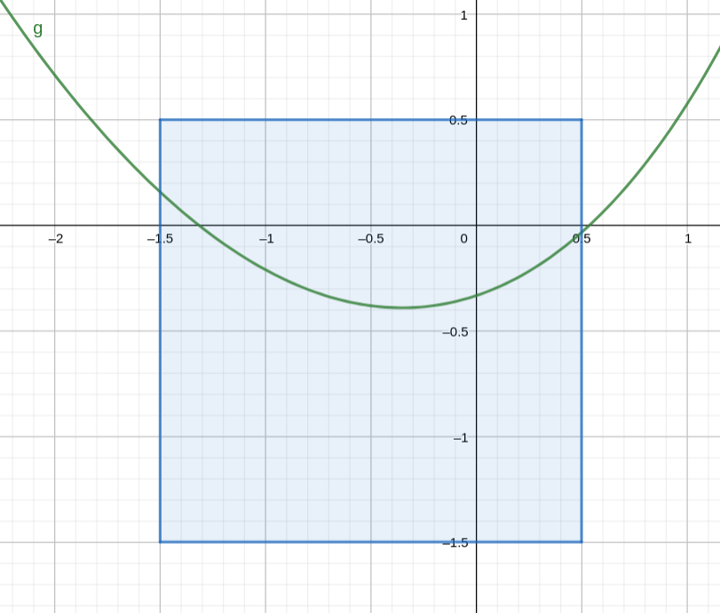
La siguiente figura muestra la derivada, confirmando que está acotada por 1 en valor absoluto:
\[ g'(x) = \frac{1}{3} (2x+e^x) \]
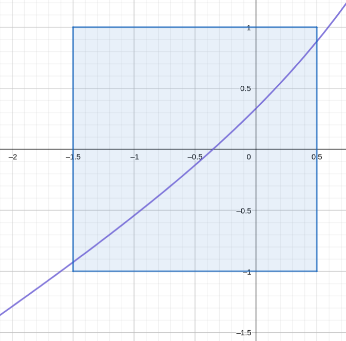
Lo anterior implica que hay una raíz dentro del intervalo \([-1.5, 0.5]\) y que empezando la sucesión con cualquier valor dentro del mismo vamos a llegar a la misma.
Otra forma es demostrar analíticamente, por ejemplo, que la derivada está acotada por el valor \(1\) en valor absoluto en intervalo analizado. Como esto puede ser “complejo”, en la práctica a veces miramos sencillamente que tanto \(|g'(a)|\) como \(|g'(b)|\) sean menores que \(1\) (pero hay que tener cuidado, que se cumpla en los extremos de los intervalos no quiere decir que se cumpla en todo el intervalo).
Si no se cumplen las condiciones, podemos probar igualmente si el método converge (aunque no hay garantías de eso) o probar con otra expresión para \(g(x)\) que sí cumpla con las condiciones.
Paso 3: elegir un punto inicial y realizar las iteraciones
Imaginemos que en búsqueda de la raíz negativa estamos considerando el intervalo \([-1.5, 0.5]\) que como sabemos verifica las condiciones del teorema.
Debemos tomar cualquier punto \(p_0\) dentro de este intervalo para iniciar el proceso iterativo.
La fórmula de recurrencia es:
\[ p_n= g(p_{n-1})=\frac{p_{n-1}^2+e^{p_{n-1}}-2}{3}, \qquad n = 1, 2, ... \]
que en este caso imlica:
\[ p_n= \frac{p_{n-1}^2+e^{p_{n-1}}-2}{3}, \qquad n = 1, 2, ... \]
Tomando \(p_0 = -1.5\), el proceso converge al valor \(-0.390271\) que consideraremos como la aproximación para la raíz buscada.
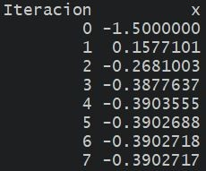
Verificar estos resultados (pueden hacerlo rápidamente en una planilla de Excel).
Para saber cuándo detenernos, podemos fijar una toleracia \(\epsilon = 1E-6\) (por ejemplo) y parar el proceso cuando la diferencia relativa entre dos aproximaciones sucesivas sea menor:
\[ \frac{|p_N - p_{N-1}|}{|p_N|} < \epsilon = 1E-6 \]
::: {.cell} ::: {.cell-output-display}  ::: :::
::: :::
Paso 4: representar gráficamente
- Como hemos mencionado, el punto fijo de \(g\) se encuentra en el lugar donde la recta identidad interseca a \(g\).
- Una gráfica de ambas nos permite visualizar el proceso iterativo de forma gráfica (la curva azul es \(g(x)\) y la roja es la recta identidad):
knitr::include_graphics("Plots/Un2/puntofijo7.png")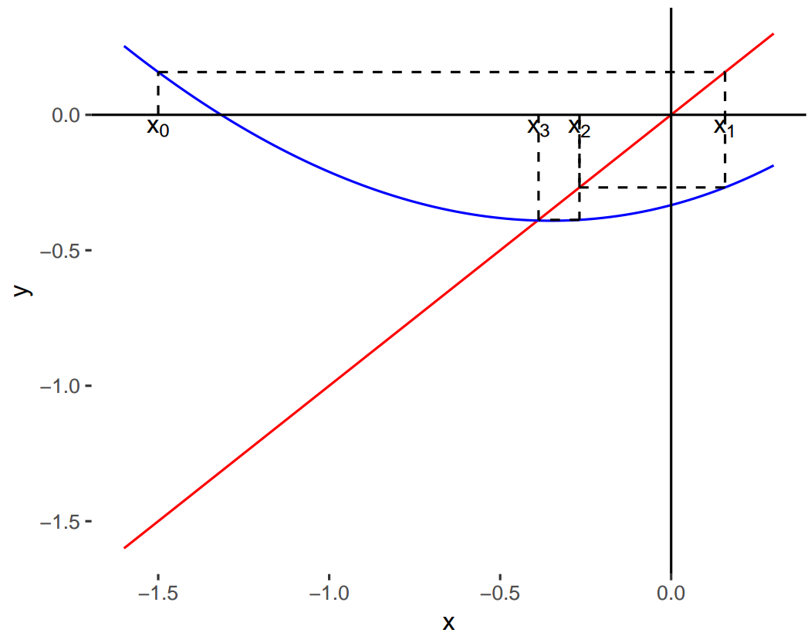
2.3.4 Casos convergentes y divergentes
- Las siguientes figuras presentan algunos ejemplos de convergencia y divergencia del proceso:
knitr::include_graphics("Plots/Un2/puntofijo8.png")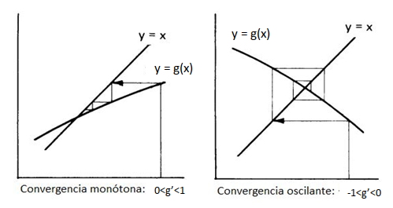
knitr::include_graphics("Plots/Un2/puntofijo9.png")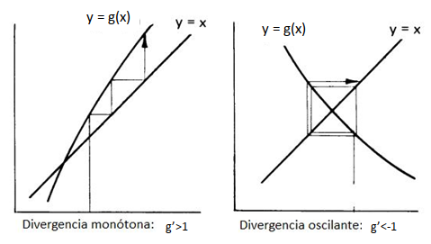
2.4 El método de Newton-Raphson
El método de Newton (o de Newton-Raphson) es uno de los métodos numéricos más poderosos y reconocidos para resolver un problema de encontrar la raíz.
Este método propone tomar una aproximación inicial \(p_0\) para la raíz de la ecuación \(f(x) = 0\) y generar la sucesión \(\{p_n\}_{n=0}^\infty\) mediante:
\[ p_n = p_{n-1} - \frac{f(p_{n-1})}{f'(p_{n-1})} \qquad n \geq 1 \]
Si se cumplen ciertas condiciones generales que estudiaremos más adelante, esta sucesión converge al verdadero valor buscado, la raíz \(p\).
Para detener las iteraciones se emplea alguno de los criterios de parada mencionados cuando vimos el método de la bisección.
Antes de ver cuáles son esas condiciones, vamos a ver de dónde surge esta fórmula de recurrencia y cómo la podemos interpretar geométricamente.
2.4.1 Deducción de la fórmula de recurrencia
Supongamos que \(f\) es continua en un intervalo \([a, b]\) y tiene derivadas primera y segunda continuas en el mismo intervalo.
Tomemos \(p_0 \in [a,b]\) como un valor que se aproxima para \(p\) y consideremos el polinomio de Taylor de grado 1 para aproximar \(f(x)\) alrededor de \(p_0\):
\[f(x) = f(p_0) + (x-p_0) f'(p_0)+ \underbrace{\frac{(x-p_0)^2}{2!}f''(\xi)}_{\text{resto, } \xi \text{ real entre } x \text{ y }p_0}\]
Ahora, evaluemos el polinomio de Taylor en el valor verdadero \(p\):
\[\text{Por ser $p$ la raíz de $f$:} \quad f(p) = 0\]
\[\text{Por el desarrollo de Taylor:} \quad f(p) = f(p_0) + (p-p_0) f'(p_0)+ \underbrace{\frac{(p-p_0)^2}{2!}f''(\xi)}_{\text{resto, } \xi \text{ real entre } p \text{ y }p_0}\]
\[\text{Entonces:}\quad 0 = f(p_0) + (p-p_0) f'(p_0)+\frac{(p-p_0)^2}{2!}f''(\xi)\]
Si \(p_0\) es una aproximación adecuada, \(|p-p_0|\) debe ser pequeño y entonces el término relacionado a \((p-p_0)^2\), mucho más pequeño y puede ser descartado, de modo que:
\[0 \approx f(p_0) + (p-p_0) f'(p_0)\]
Al despejar \(p\) tenemos:
\[ p \approx p_{0} - \frac{f(p_{0})}{f'(p_{0})} \equiv p_1 \]
Llamamos al valor anterior \(p_1\) y repetimos el procedimiento planteando el desarrollo en serie de Taylor de \(f\) alrededor de \(p_1\), encontrando que:
\[ p \approx p_{1} - \frac{f(p_{1})}{f'(p_{1})} \equiv p_2 \]
Si seguimos repitiendo esto, damos lugar a una sucesión que debe acercarnos cada vez más al verdadero valor de \(p\):
\[ p_n = p_{n-1} - \frac{f(p_{n-1})}{f'(p_{n-1})} \qquad n \geq 1 \]
2.4.2 Interpretación geométrica
- Recordemos la definición de recta tangente:
Definición: una recta se dice que es tangente a una función \(f\) en un punto \(a\) cuando pasa por ese punto y su pendiente es \(f'(a)\). La ecuación de la recta tangente a la gráfica de la función en el punto \((a, f(a))\) es:
\[ y = f(a) + f'(a) (x - a) \]
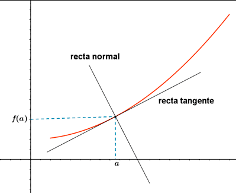
La fórmula de recurrencia presentada anteriormente equivale a encontrar el próximo valor \(p_n\) como el punto en el que el eje de las abscisas interseca a la recta tangente a la gráfica de \(f\) en \((p_{n-1}, f(p_{n-1}))\).
Es decir, al empezar con la aproximación inicial \(p_0\), la aproximación \(p_1\) es la intersección con el eje \(x\) de la recta tangente a la gráfica de \(f\) en \((p_0, f(p_0)\).
La aproximación \(p_2\) es la intersección con el eje \(x\) de la recta tangente a la gráfica de \(f\) en \((p_1, f(p_1)\) y así sucesivamente:
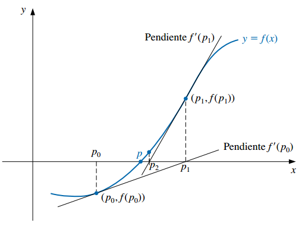
¿De dónde sale que la fórmula de recurrencia equivale a esto de avanzar en la sucesión de acuerdo a las rectas tangentes? Hay que prestarle atención a las pendientes.
Por ejemplo, por definición de recta tangente, sabemos que la pendiente de la tangente a \(f\) en \(p_0\) es igual a:
\[ m = f'(p_0) \]
Pero también sabemos que la pendiente se puede definir como el siguiente cociente, donde \((x_0, y_0)\) y \((x_1, y_1)\) son dos puntos cualesquiera pertenecientes a la recta:
\[ m = \frac{y_1 - y_0}{x_1 - x_0} \]
Podemos tomar los puntos \((p_0, f(p_0))\) y \((p_1, 0)\) (el punto donde la tangente interseca al eje \(x\)) y encontrar una expresión para la pendiente de la tangente:
\[ m = \frac{y_1 - y_0}{x_1 - x_0} = \frac{0 - f(p_0)}{p_1 - p_0}= -\frac{f(p_0)}{p_1 - p_0} \]
Igualando las dos expresiones equivalentes vistas para la pendiente \(m\):
\[ f'(p_0) = -\frac{f(p_0)}{p_1 - p_0} \implies p_1 = p_{0} - \frac{f(p_{0})}{f'(p_{0})} \]
Si repetimos este pensamiento con la recta tangente a \(f\) en el punto \(p_1\), vamos a encontrar que:
\[ p_2 = p_1 - \frac{f(p_1)}{f'(p_1)} \]
Esto constituye una derivación geométrica del método de Newton-Raphson desde el punto de vista de las rectas tangentes a \(f\) en los puntos \(p_{n}\).
2.4.3 Convergencia
- La derivación del método de Newton por medio de la serie de Taylor señala la importancia de una aproximación inicial precisa.
- La suposición crucial es que el término relacionado con \((p - p_0)^2\) es, en comparación con \(|p - p_0|\), tan pequeño que se puede eliminar.
- Claramente esto será falso a menos que \(p_0\) sea una buena aproximación para \(p\). Si no lo es, no existen razones para sospechar que el método convergerá en la raíz (aunque en algunos casos incluso malas aproximaciones iniciales producen convergencia).
- El siguiente teorema establece cuáles son las condiciones para el método converja, que básicamente se resumen en el hecho de que \(p_0\) tiene que estar suficientemente cerca de \(p\).
Teorema: convergencia del método de Newton-Raphson:
Sea \(f\) continua en un intervalo \([a, b]\) con derivadas primera y segunda continuas en el mismo intervalo. Si \(p \in (a,b)\) es tal que \(f(p)=0\) y \(f'(p) \neq 0\), entonces existe \(\delta >0\) tal que el método de Newton-Raphson genera una sucesión \(\{p_n\}_{n=0}^\infty\) que converge a \(p\) para cualquier aproximación inicial \(p_0 \in [p-\delta,p+\delta]\).
El teorema se demuestra considerando que la sucesión propuesta por el método es una iteración de punto fijo. Repetimos la fórmula de recurrencia:
\[ p_n = \underbrace{p_{n-1} - \frac{f(p_{n-1})}{f'(p_{n-1})}}_{g(p_{n-1})} \qquad n \geq 1 \]
Vemos que se trata de una iteración de punto fijo \(p_n = g(p_{n-1})\), en la que la función \(g\) es:
\[ g(x) = x - \frac{f(x)}{f'(x)} \]
Por lo tanto, el método converge cuando se cumplen las condiciones del Teorema del punto fijo:
- \(g\) es continua en \([a, b]\) y \(g(x) \in [a, b]\) para todo \(x \in [a, b]\).
- \(g'(x)\) existe en \((a, b)\) y existe una constante \(0<k<1\) con tal que \(|g'(x)| \leq k < 1\).
Analicemos solamente la condición acerca de que la derivada de \(g\) tiene que estar acotada:
\[|g'(x)| \leq k < 1\]
Tomamos la derivada:
\[g'(x) = 1 - \frac{[f'(x)]^2 - f(x)f''(x)}{[f'(x)]^2} = 1 - 1 + \frac{f(x)f''(x)}{[f'(x)]^2} = \frac{f(x)f''(x)}{[f'(x)]^2}\]
Es decir, el método convergerá si:
\[|g'(x)| = \frac{|f(x)f''(x)|}{[f'(x)]^2} \leq k < 1\]
Por hipótesis, sabemos que \(f(p) = 0\); luego \(g'(p) = 0\). Como \(g'(x)\) es continua y \(g'(p) = 0\), siempre podemos encontrar un \(\delta > 0\) tal que \(|g'(x)| < 1\) se cumpla en el intervalo \([p - \delta, p + \delta]\).
Por consiguiente, que \(p_0\) se encuentre dentro de \([p - \delta, p + \delta]\) es una condición suficiente para que la sucesión \(\{x_n\}_{n=0}^{\infty}\) converja a la única raíz de \(f(x) = 0\) en dicho intervalo.
La condición anterior tiene las siguientes implicancias. Para facilitar la convergencia:
- \(p_0\) tiene que estar suficientemente cerca de \(p\).
- \(f''(x)\) no debe ser muy grande y \(f'(x)\) no debe ser muy chica en ese intervalo.
Si bien el teorema sirve para asegurar la convergencia, no dice cómo determinar \(\delta\), así que en la práctica se selecciona una aproximación inicial y se generan aproximaciones sucesivas con el método de Newton. Puede que éstos converjan rápidamente a la raíz o será claro que la convergencia es poco probable.
Observación: el método no puede continuar si \(f'(p_{n-1}) = 0\) para alguna \(n\).
2.4.4 Ejemplo
Retomemos el ejemplo anterior en cual buscábamos las raíces de la ecuación no lineal: \(f(x) = x^2-3x+e^x-2=0\)
Mediante el método del punto fijo reformulamos la ecuación anterior como \(x = g(x)\) con:
\[g(x)= \frac{x^2+e^x-2}{3}\]
De esa forma pudimos hallar la raíz negativa.
Sin embargo, el método no sirve para hallar la raíz positiva (verificar que no se cumplen las condiciones del teorema en vecindades de la raíz).
Si bien podríamos probar con otra expresión para \(g(x)\), ¿podrá el método de Newton-Raphson sernos útil en este caso?
Verificar.
2.5 Variantes del método de Newton-Raphson
2.5.1 Método de la secante
El método de Newton es una técnica en extremo poderosa, pero tiene una debilidad importante: la necesidad de conocer el valor de la derivada de \(f\) en cada aproximación.
\(f'(x)\) puede ser más difícil y necesitar más operaciones aritméticas para ser calculada que \(f(x)\).
Para evitar el problema de la evaluación de la derivada, el método de la secante presenta una ligera variación.
Por definición de derivada:
\[ f'(p_{n-1}) = \lim_{x \rightarrow p_{n-1}} \frac{f(x) - f(p_{n-1})}{x- p_{n-1}} \]
Si \(p_{n-2}\) está cerca de \(p_{n-1}\):
\[ f'(p_{n-1}) \approx \frac{f(p_{n-2}) - f(p_{n-1})}{p_{n-2}- p_{n-1}} = \frac{f(p_{n-1}) - f(p_{n-2})}{p_{n-1}- p_{n-2}} \]
Usando esta aproximación en la fórmula de Newton obtenemos:
\[ p_n = p_{n-1} - \frac{f(p_{n-1})(p_{n-1}- p_{n-2})}{f(p_{n-1}) - f(p_{n-2})} \qquad n \geq 2 \]
Notar que se necesitan dos aproximaciones iniciales.
Este método también goza de una interpretación geométrica que es la que le da su nombre.
Definición: una recta secante es una recta que corta a una curva \(f\) en dos o más puntos. Conforme estos puntos se acercan y su distancia se reduce a cero, la recta secante pasa a ser la recta tangente.
La ecuación de la recta secante a \(f\) que pasa por los puntos \((x_1, f(x_1))\) y \((x_2, f(x_2))\) es (fórmula de la recta que pasa por dos puntos):
\[ y = f(x_1) + \frac{f(x_2) - f(x_1)}{x_2 - x_1} (x - x_1) \]
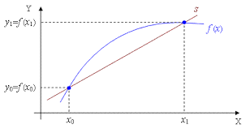
Empezando con dos aproximaciones iniciales \(p_0\) y \(p_1\), la aproximación \(p_2\) es la intersección en \(x\) de la recta que une los puntos \((p_0, f(p_0))\) y \((p_1, f(p_1))\).
La aproximación \(p_3\) es la intersección en \(x\) de la recta que une los puntos \((p_1, f(p_1))\) y \((p_2, f(p_2))\) y así sucesivamente.
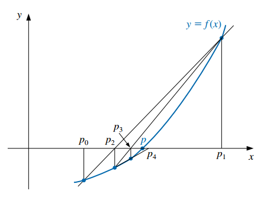
- Observación: sólo se necesita una evaluación de la función por cada paso para el método de la secante después de haber determinado \(p_2\). En contraste, cada paso del método de Newton requiere una evaluación tanto de la función como de su derivada.
2.5.2 Método de von Mises
En el método de Newton-Raphson, el denominador \(f'(p_{n-1})\) hace que geométricamente se pase de una aproximación a la siguiente por la tangente de la curva \(y = f(x)\) en el punto correspondiente a la aproximación presente \(p_{n-1}\).
Esto puede producir problemas cuando se esté en puntos alejados de raíces y cerca de puntos donde el valor de \(f'(x)\) sea cercano a 0 (tangentes cercanas a la horizontal).
Para resolver este problema, von Mises sugirió sustituir \(f'(p_{n-1})\) en el denominador por \(f'(p_{0})\).
Es decir, obtener las aproximaciones de la sucesión por medio de rectas que son todas paralelas a la primera tangente.
La fórmula de recurrencia resultante es:
\[ p_n = p_{n-1} - \frac{f(p_{n-1})}{f'(p_{0})} \qquad n \geq 1 \]
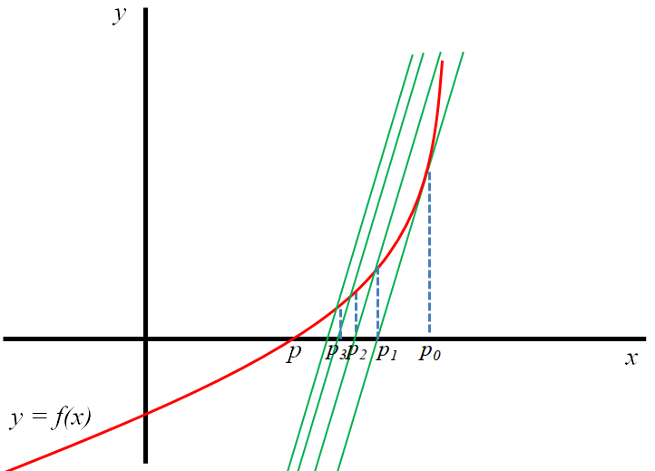
- Si la derivada requiere muchos cálculos, este método posee la ventaja de que la misma sólo debe ser evaluada una vez.
2.5.3 Método de Newton-Raphson de 2º Orden
Otra modificación al método de Newton-Raphson se deriva a partir de la utilización de un término más en el desarrollo por serie de Taylor de la función \(f(x)\).
Dada la existencia de las correspondientes derivadas, la fórmula de recurrencia resultante es:
\[ p_n = p_{n-1} + \frac{f(p_{n-1})f'(p_{n-1})}{0.5 f(p_{n-1}) f''(p_{n-1}) - [f'(p_{n-1})]^2} \qquad n \geq 1 \]
El método de Newton-Raphson de 2º orden llega más rápidamente a la raíz que el de primer orden, pero requiere de más cálculos y la desventaja de especificar también la derivada segunda.
Ejercicio propuesto: derivar la ecuación de recurrencia de este método de forma análoga a la derivación de la fórmula para el método de Newton-Raphson.